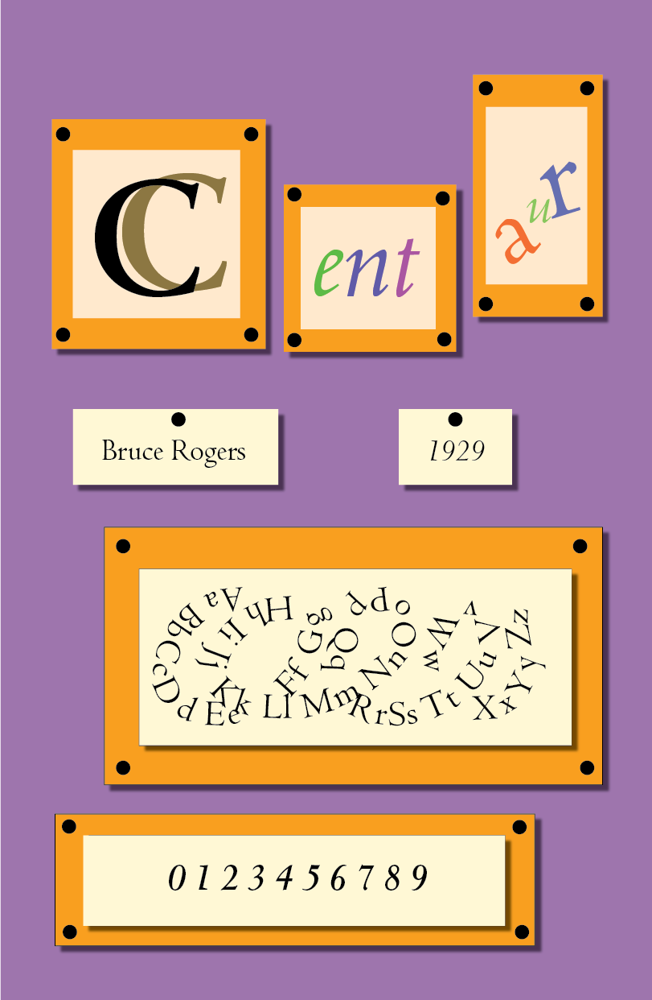

Problem:
For this project, we were asked to make posters for a typeface of our choice.
Action:
I chose Centaur as my typeface. While the typeface is usually associated with a more serious feel as it had originally been used to set the Oxford Lecture Bible and Penguin Books, I drew my inspiration from the font's history with the New York Metropolitan Museum of Art. I made my design resemble a modern art exhibit at an art museum with bright, contrasting colors.
Results:
A colorful, playful representation of Centaur that draws from its history and defies usual perceptions of the font.
Tools Used:
Adobe Illustrator